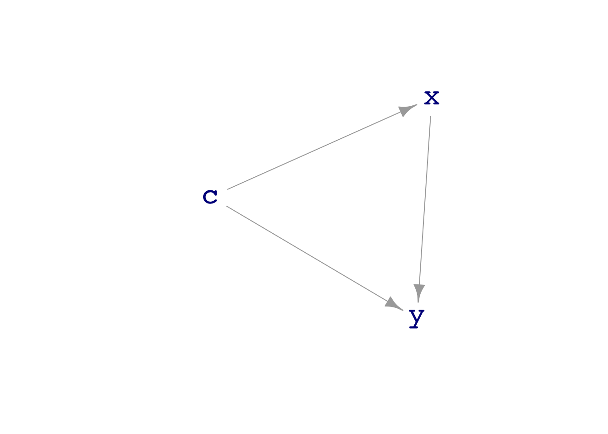
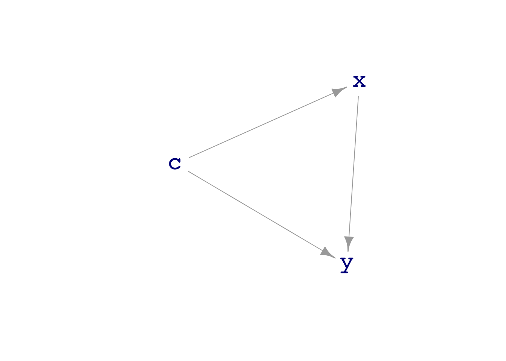
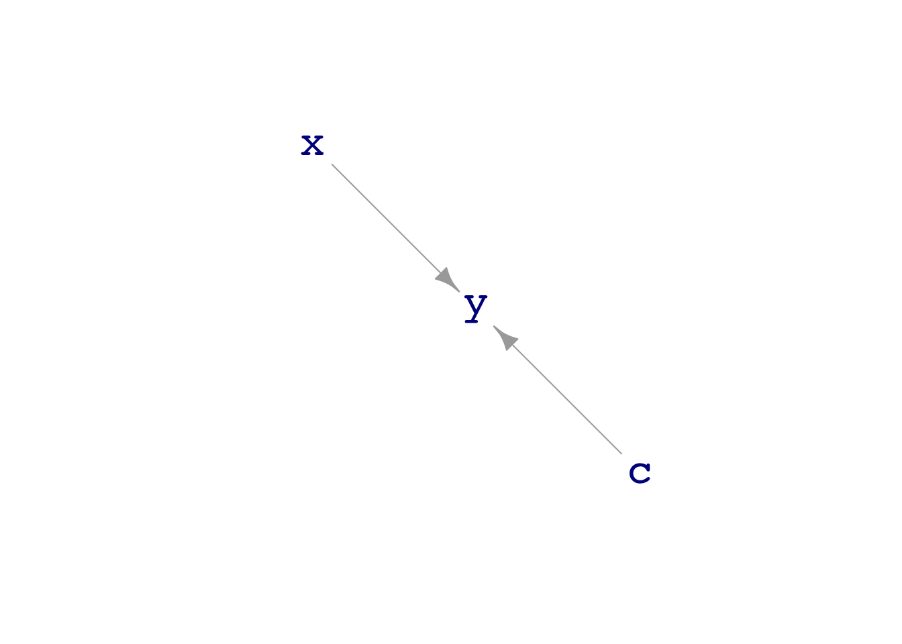
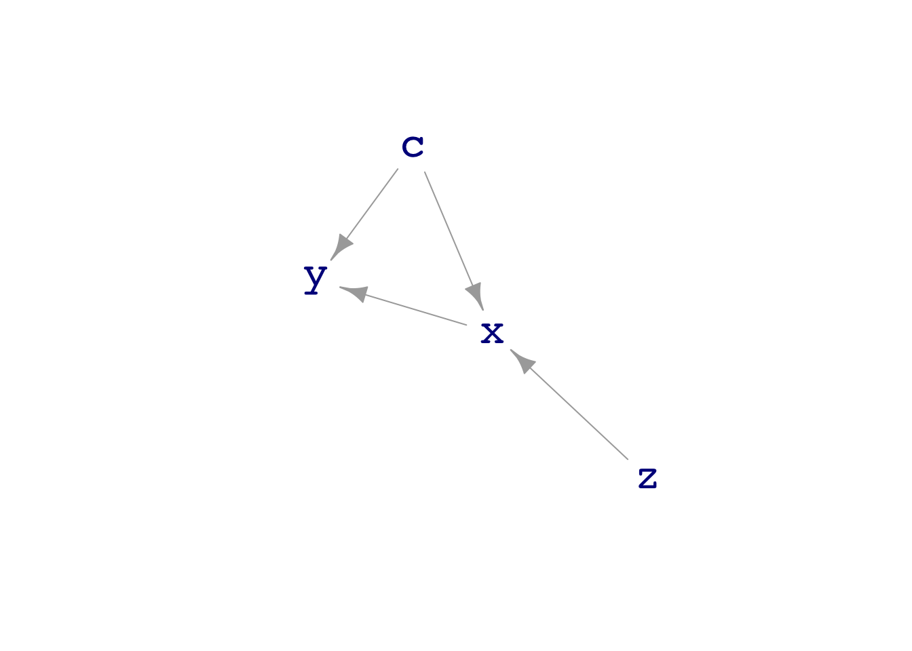

dag08[[1]]
c ~ eps()
[[2]]
x ~ c + eps()
[[3]]
y ~ x + c + 3 + eps()
attr(,"class")
[1] "list" "dagsystem"dag_draw(dag08)
Experiment and random assignment
Prof. Danny Kaplan
November 4, 2022
32.1 Properly use nomenclature of experiment.
32.2 Correctly re-draw DAG for an ideal experimental intervention.
32.3 Use blocking to set assignment to treatment or control.
TBD
Short discussion about the words “hypothesis” and “theory.” Try to establish a simple, concrete definition of hypothesis: “A statement about the world that might or might not be correct.”
ORIGIN: late 16th century: via late Latin from Greek hupothesis ‘foundation’, from hupo ‘under’ + thesis ‘placing’.
Source: New Oxford American Dictionary
A DAG is merely a hypothesis about how mechanisms function. One of the prime objectives of “science,” be it a natural science like chemistry or a social science like economics, is to provide evidence for an against relevant hypotheses.
It’s a common view of science, at least in sciences such as chemistry or physics or molecular genetics, that the theories (say, \(F = ma\) or the translation of DNA triples into amino acids) are a complete and truthful description of the world. The word “theory” itself aids in this perception and often one studies “theory” in order to be able to calculate the outcomes in various situations, for instance the speed over time of a rocket accelerating upward as it burns fuel. We don’t talk about the “hypothesis of relativity” or “quantum hypothesis.” The word “hypothesis” suggests doubt. There was certainly substantial doubt in the early days of relativity or quantum mechanics or even Newton’s theory of universal gravitation. But evidence has been adduced to such an extent that the doubt is practically dispelled and what were once hypotheses are now considered theories. (There’s also a pattern of using “theory” to promote hypotheses into being regarded as more substantial. An example is “string theory,” which is not a generally accepted way of describing nature. The “theory of dark matter” is similar.)
Particularly noteworthy are predictions that go against other hypotheses. For example, Newtonian gravitation isn’t a wave phenomenon, but general relativity (Einstein’s theory of gravity) does predict wave-like behavior. In (Lesson 26)[Math300R-Lesson26.html] we discussed techniques for making predictions that incorporate uncertainty. This provides a means to refine judgements about the extent to which a prediction is supported by observation.
For instance, General Relativity supports a prediction that gravity propagates like a wave. This prediction can be quantified: a wave that might be observable by an incredibly delicate apparatus would be generated by, say, a supernova. Apparatus is built, the predicted phenomena is observed, and confidence in the theory increases accordingly. Often, predictions are not followed by observation. This unhappy situation is often followed by attempts to tweak the theory to make improved predictions that correspond to the (lack of) observation.
The hallmark of experiment is intervention. For instance, an important theory of plant growth involves a chemical called “auxin.” The theory holds that exposing plant tissue to light inhibits the generation of auxin. The auxin in turn, facilitates tissue growth and expansion. The result of the differential growth in on the lit and shaded side of a plant is growth toward the source of light. Illustration.
Much of the experimentalist’s intervention involves standardizing the conditions of the experiment. For instance, a plant growth study will provide a standard soil mixture, temperature, and watering amount for all the plants being studied.
But experiment always involves another aspect: one or more of the conditions is made to vary from one experimental unit to another. For instance, some plants might be lit from the North and others from the South. Seeing the same pattern of light-associated plant growth from both directions provides evidence that the Earth’s magnetic field is not a factor in determining plant orientation.
Experiment is hard work and good experimental technique is paramount. Our goal here is to enhance the understanding of how experiment works generally. We’re going to do this by simulation/gaming.
We’ll start with a DAG that provides the rules of the game for how different factors are connected. We’ll generate samples from the DAG and do some data analysis to illuminate the conditions in which data analysis can reveal—or not—the DAG mechanism. Then we’ll simulate the intervention of experiment and see whether this can improve our ability to reveal the mechanism. (Of course, in real science, we don’t have this ability to look immediately at the mechanism and see how it’s structured. Our goal, however, is not to do science but to illustrate how scientific technique works.)
Consider this DAG:
[[1]]
c ~ eps()
[[2]]
x ~ c + eps()
[[3]]
y ~ x + c + 3 + eps()
attr(,"class")
[1] "list" "dagsystem"
You can see from the DAG formulas that the value of y increases or decreases exactly with the value of x. (The “coefficient” on x is 1.0)
As we’ve done before, we can simulate data from dag08 and use regression to observe the relationship between x and y.
Sample <- sample(dag08, size=1000) # big, so that the noise is not a strong issue
lm(y ~ x, data = Sample) %>% coefficients()(Intercept) x
3.035477 1.493347 2.5 % 97.5 %
(Intercept) 2.959984 3.110970
x 1.439507 1.547186The coefficient we observe is 1.5, not 1.0. So this approach to data analysis is not revealing the true mechanism. (It’s legitimate to wonder whether 1.5 is really that different from 1.0, given the random factors involved in the mechanism. The confidence interval guides us here. By using size=1000, we narrowed the confidence interval to the extent that the interval on the observed coefficient has no overlap with the DAG specified coefficient of 1.0).
In Lesson 27 we discussed using covariates in a model in order to get a more accurate view of the true mechanism. This is a valuable technique, but using it requires that we know what are the covariates and can record their values in data. In this lesson, we’ll imagine that we know how to do an experiment but don’t have any reliable knowledge about covariates.
Carrying out an experiment means intervening in the workings of the system. The intervention we’re going to make in this example is to experimentally “control” or “set” the values of x.
In practice, this means we are creating a new DAG that represents our intervention in the system.
The dag_intervene() function is convenient for constructing the new DAG. The function works by letting us create a new formula for any variable in the DAG. For an ideal experiment, the new formula will just involve setting the values of x as we will.
[[1]]
c ~ eps()
[[2]]
x ~ c + eps()
[[3]]
y ~ x + c + 3 + eps()
attr(,"class")
[1] "list" "dagsystem"
Notice that the experimental intervention has disconnected all the inputs from x.
Sample data from exp08 and do an appropriate data analysis:
2.5 % 97.5 %
(Intercept) 2.9776216 3.231045
x 0.7131485 1.075182The confidence interval on the coefficient on x is 0.88 to 1.21, completely consistent with the (known) mechanism linking x and y. In other words, the experimental intervention correctly reveals the true mechanism.
If we have access to covariates, it’s perfectly legitimate to include them in our models as explanatory variables. The advantage of doing so is that the amount of noise in y is reduced, because we are accounting for it by using the covariate.
2.5 % 97.5 %
(Intercept) 2.9467961 3.121267
x 0.8489398 1.098079
c 0.9711970 1.092569The confidence interval on the x coefficient is smaller: 0.92 to 1.17.
An imperfect experiment, in the sense we mean here, is an experiment where the intervention attenuates the inputs to the variable of interest, but doesn’t utterly eliminate them. Here’s an example:
Imperfect experiments are the rule in, say, clinical drug trials. For instance, people who are still sick may drop out of the trial or stop taking the assigned medicine.
Let’s look at the impact of the imperfection in exp08b:
2.5 % 97.5 %
(Intercept) 2.370253 2.551265
x 1.975386 2.186384The confidence interval on the coefficient on x shows that we have not correctly revealed the mechanism of x -> y of the DAG.
There is a technique to improve results in experimental trial. We’ll make yet another DAG, which will be the same as exp08b but where we record the experimenter’s intended setting for the x variable.

Let’s see what data analysis reveals for this DAG.
2.5 % 97.5 %
(Intercept) 2.365859 2.546620
x 1.811353 2.020271Still a wrong result. The improvement comes when we ignore the actual value of x and look at the relationship between the experimentally perfect z and y:
2.5 % 97.5 %
(Intercept) 2.6767836 2.975588
z 0.9563167 1.382745Back on target! This method is called “intent to treat” because we are looking at how our experimental intentions play out to y.